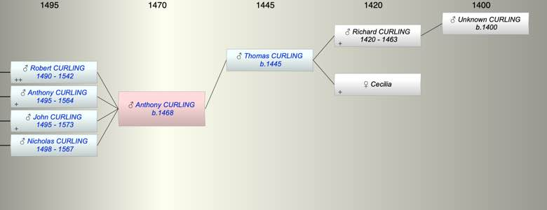

| [Index] |
| Anthony CURLING (1468 - ) |
|  |
| b. abt 1468 |
| Parents: |
| Thomas CURLING (1445 - ) |
| Siblings (1): |
| William CURLING (1470 - ) |
| Children (4): |
| Robert CURLING (1490 - 1542) |
| Anthony CURLING (1495 - 1564) |
| John CURLING (1495 - 1573) |
| Nicholas CURLING (1498 - 1567) |
| Grandchildren (13): |
| Richard CURLING (1513 - 1573), Robert CURLING (1517 - 1586), Daughter CURLING (1518 - ), John CURLING (1528 - ), William CURLING (1530 - ), Anthony CURLING (1535 - 1), Mathew CURLING (1540 - ), Nicholas CURLING (1545 - ), Robert CURLING (1520 - 1586), Anthony CURLING (1522 - 1586), William CURLING (1525 - 1582), Sybil CURLING (1530 - ), Richard CURLING (1540 - 1587) |
| Events in Anthony CURLING (1468 - )'s life | |||||
| Date | Age | Event | Place | Notes | Src |
| abt 1468 | Anthony CURLING was born | ||||
| abt 1490 | 22 | Birth of son Robert CURLING | |||
| abt 1495 | 27 | Birth of son Anthony CURLING | |||
| abt 1495 | 27 | Birth of son John CURLING | |||
| abt 1498 | 30 | Birth of son Nicholas CURLING | |||
| 1542 | 74 | Death of son Robert CURLING (aged 52) | |||
| 1564 | 96 | Death of son Anthony CURLING (aged 69) | Note 1 | ||
| 1567 | 99 | Death of son Nicholas CURLING (aged 69) | St Lawrence | buried St Lawrence 14 Oct 1567 | |
| 1573 | 105 | Death of son John CURLING (aged 78) | St Laurence | not found | |
| Note 1: buried St Laurence 24 Dec 1564 ex MW |
| Created on a Mac™ using iFamily for Mac™ on 8 Oct 2023 |